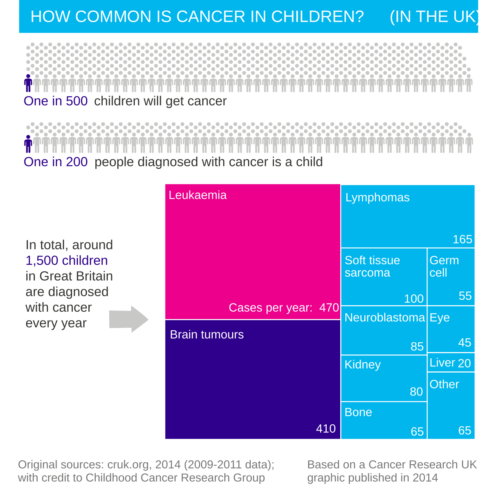

Por que, na frente de uma criança com massa no abdome, a banca quase sempre só deixa duas saídas — e exige que você escolha entre elas?
Câncer na infância: por que tudo cai em dois tumores
A epidemiologia infantil não é a do adulto — e a banca conta com isso
O câncer da criança não é o câncer do adulto em miniatura. A epidemiologia é outra, e os tipos de neoplasia que acometem a criança são diferentes. Quem domina isso já não cai nas pegadinhas mais básicas. Na população pediátrica, as neoplasias mais frequentes são as do sistema linfo-hematopoiético — as leucemias. É por isso que a maior parte das questões de oncologia pediátrica cobra, no fundo, a suspeição de leucemia: criança com palidez, sangramento, dor óssea, hepatoesplenomegalia — a luz acende para leucemia.
A hierarquia dos "mais comuns" que o enunciado usa para confundir
Mas a criança também tem neoplasias sólidas. E aqui mora a primeira hierarquia que a banca adora montar como distrator. O tumor sólido mais comum da infância é o do sistema nervoso central. Curiosamente, SNC cai pouco em prova de pediatria geral. Tire o SNC da jogada e o sólido mais comum passa a ser o neuroblastoma. Repare na escada que o enunciado vai oferecer como alternativas: leucemia (a mais comum de todas), tumor de SNC (o sólido mais comum), e só então o neuroblastoma. Essa escada está ali para confundir — cada degrau é verdade em um recorte diferente.
O que a prova realmente quer: neuroblastoma ou Wilms
O que de fato decide as questões é o diagnóstico diferencial dos tumores abdominais. A criança pode ter um tumor hepático, um tumor de córtex da adrenal, várias outras coisas — mas, para fins de prova, diante de uma criança com tumor abdominal, a banca quer que você diga qual dos dois ela tem: tumor de Wilms ou neuroblastoma. Toda a construção é essa bifurcação. O resto — epidemiologia, marcadores, metástase, prognóstico — existe só para alimentar essa única decisão.
Os nós teal de cima (leucemia, SNC) são "mais comum" de recortes que não disputam a massa abdominal. A árvore afunila até as duas únicas saídas que a prova cobra: neuroblastoma × Wilms. Toque cada um para o recorte exato.

Quiz — fixação
-
Qual a neoplasia mais comum na população pediátrica como um todo?
Gabarito: A. Na infância como um todo, as neoplasias mais frequentes são as do sistema linfo-hematopoiético — as leucemias. B é o tumor sólido mais comum (recorte diferente). C é o sólido mais comum fora do SNC (recorte ainda mais estreito). D é o tumor renal mais comum. Todas são "mais comum" de algo — a pegadinha é misturar os recortes.
Por que cair na B: "tumor sólido mais comum" é uma frase que gruda, e o aluno a generaliza para "tumor mais comum". Por que cair na C: neuroblastoma é o tema da página, então parece o protagonista — mas ele só domina o recorte do sólido extra-SNC e do menor de 1 ano.
-
O tumor sólido mais comum da infância é o neuroblastoma.
Falso. O tumor sólido mais comum da infância é o do sistema nervoso central. O neuroblastoma é o sólido mais comum fora do SNC — só assume o posto quando se retira o SNC da conta. Trocar um recorte pelo outro é exatamente o erro que a banca planta.
Por que o "Verdadeiro" engana: SNC cai pouco em prova de pediatria, então o aluno raramente o lembra e promove o neuroblastoma a campeão geral dos sólidos. A frequência clínica, porém, é do SNC.